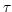

Subsections
StaticStdpSynapse
- back_delay (sec) :
- Delay of dendritic backpropagating spike (the synapse sees the postsynaptic spike delayed by back_delay
- tauspost :
- Used for extended rule by Froemke and Dan. See Froemke and Dan (2002). Spike-timing-dependent synaptic modification induced by natural spike trains. Nature 416 (3/2002).
- tauspre :
- Used for extended rule by Froemke and Dan.
- taupos :
- Timeconstant of exponential decay of positive learning window for STDP.
- tauneg :
- Timeconstant of exponential decay of negative learning window for STDP.
- dw :
-
- STDPgap :
- No learning is performed if
|Delta| = |tpost-tpre| < STDPgap.
- activeSTDP :
- Set to 1 to activate STDP-learning. No learning is performed if set to 0.
- useFroemkeDanSTDP :
- activate extended rule by Froemke and Dan (default=1)
- Wex :
- The maximal/minimal weight of the synapse
- Aneg :
- Defines the peak of the negative exponential learning window.
- Apos :
- Defines the peak of the positive exponential learning window.
- mupos :
- Extended multiplicative positive update:
dw = (Wex-W)mupos * Apos * exp(-Delta/taupos). Set to 0 for basic update. See Guetig, Aharonov, Rotter and Sompolinsky (2003). Learning input correlations through non-linear asymmetric Hebbian plasticity. Journal of Neuroscience 23. pp.3697-3714.
- muneg :
- Extended multiplicative negative update:
dw = Wmupos * Aneg * exp(Delta/tauneg). Set to 0 for basic update.
- tau (sec) :
- The synaptic time constant 
- W :
- The weight (scaling factor, strenght, maximal amplitude) of the synapse
- delay (sec) :
- The synaptic transmission delay
- psr :
- The psr (postsynaptic response) is the result of whatever computation is going on in a synapse.
- steps2cutoff :
-